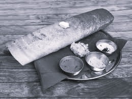

Popular Indian Dishes
Explore the flavors of India through its diverse and rich culinary traditions!
North Indian Cuisine
North India is known for its rich, aromatic, and flavored dishes often cooked with ghee and spices:
- Biryani: A fragnant rice dish made with aromatic spices and meat or vegetables.
- Butter Chicken: A creamy, tomato-based curry that's favourite worldwide.
- Paneer Tikka: Marinated paneer cubes grilled to perfection.

Aromatic and flavored Biryani
South Indian Cuisine
South India offers a wide array of dishes with a perfect blend of spices and tangy flavors:
- Masala Dosa: A crispy rice crepe stuffed with spicy potato filling.
- Idli and Sambhar: Soft rice cakes served with a tangy lentil-based vegetable stew.
- Chettinad Chicken: A fiery, flavorful chicken dish from Tamil Nadu.
- 
South indian favourite: Masala dosa
Sweet Delights
No Indian meal is complete without indulging in some mouth-watering desserts:
- Gulab Jamun: Fried milk solids soaked in sugar syrup.
- Rasgulla: Soft and spongy cheese balls in light sugar syrup.
- Payasam: A south indian dessert made of milk, rice, and jaggery.

Incredible Gulaab Jamun
Back to Home
Contact us at info@incredibleindia.com
© 2025 Incredible India Project.All rights reserved.